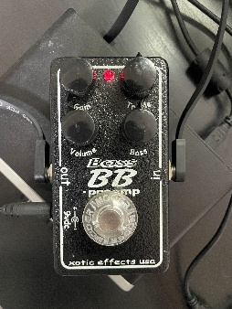
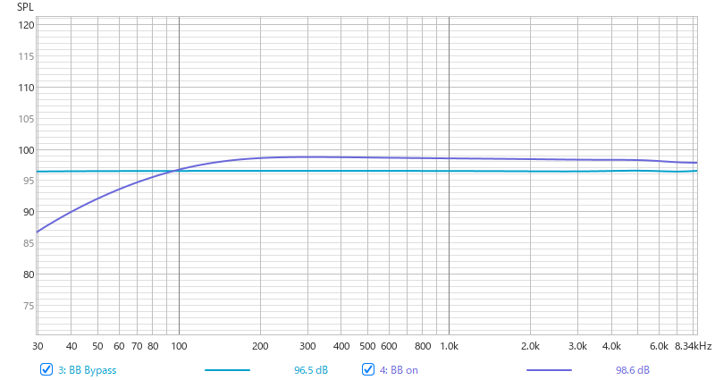
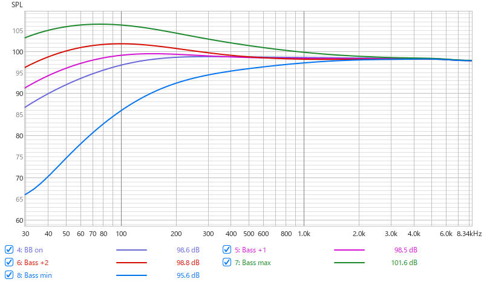
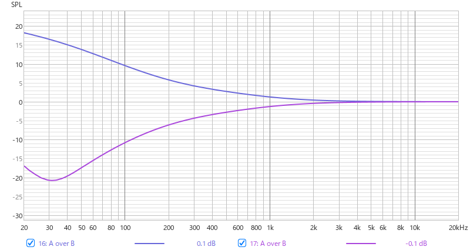
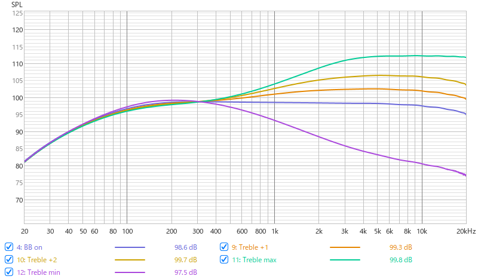
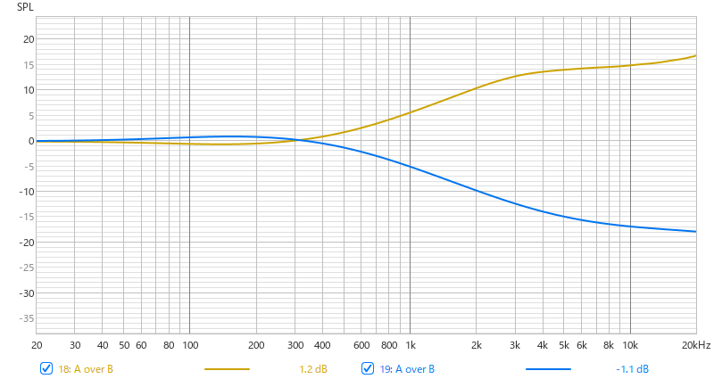
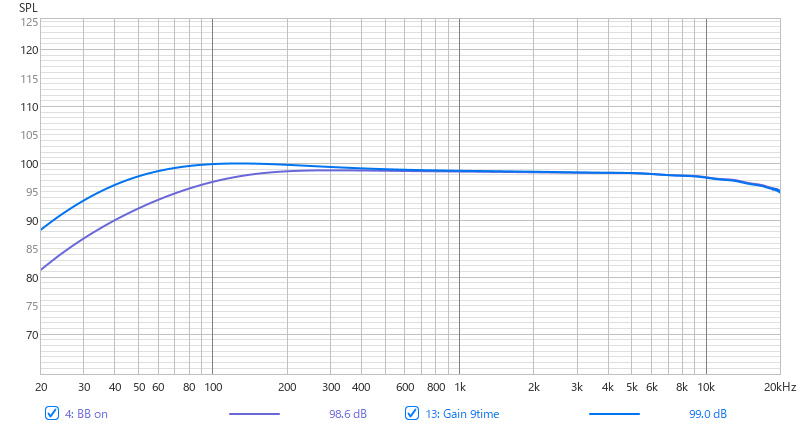

週刊東山通信 第11回自分の機材のことを知ろう投稿日：2026年4月24日 ｜ 執筆：勝野塁 ベーシスト、ギタリストの多くはバンドで演奏する際にエフェクターを使用するだろう。実際、私もいくつかエフェクターを所有している。エフェクターを使用する理由は多岐にわたるが、ほとんど「自分が求める音にするため」ということばに集約できるだろう。このためにギタリストやベーシストは練習やリハの際に機材のつまみをいじり、頭をひねる。 私はこの作業にかかる時間をできるだけ短縮したいという思いがあり、音作りの際にはたいてい機材の説明書をネットで検索する。たいていの場合はつまみを可変させるとどのように音が変化するのか記載してある。このとき、Bassの中心周波数は80 Hzだとか、middleの中心周波数は850 Hzだとか書いてあればよいが、数値などはなく、非常に感覚的な説明にとどまっているものもある。こうしたエフェクターの場合は実際にアンプで音を出しながら、どのように変化するのか自ら確かめることになるのだが、私は自分の耳をあまり信用していないため、できることなら数値に頼りたいのである。したがって、所有するエフェクターによる音の変化を計測したいと考えた。 そこで、Room EQ Wizardというフリーソフトを用いて、エフェクターの周波数特性を計測することを試みる。Room EQ Wizardは本来、いわゆる部屋鳴りを計測するためのソフトだと思うが、このソフトを用いて20 Hzから20 kHzまでのサイン波を掃引してエフェクターの周波数特性を測定したいと考えた。なお、測定にはオーディオインターフェースが必要であるが、私はあまり上等なオーディオインターフェースを持っていないことに加え、音響等に関して素人であるので、厳密な議論ができないことはご容赦願いたい。 今回は説明書にそこそこ周波数について書いてある。Xotic Bass BB Preampを計測する。ひとまず、よくやるフラットな設定(Gain0, Bass12時,Treble12時,Volume11時)を測定し、これを基準とする。   図 BypassとOnの比較 BB PreampはTrue Bypassの仕様であり、Bypass時はフラットな特性といえる。Onにすると100 Hz以下の低音が減衰し、Middleが全体的に2 dbほど増加している。おおむね想定していた変化であり、自分の感覚と大きな差が無かったのは喜ばしいが、Onにしただけで低音が減衰しており、今後、安易にエフェクターを使うことがためらわれるような結果だ。  図 Bassの比較  図 Bass12時との差(Max, Min) EQについては、+1=時計回りに45°、+2=時計回りに90°回した状態と解釈していただきたい。図3に示したのは、図2に示したBass max, Bass minとBB onのスペクトルの差をとったものである。説明書では90 Hz付近を中心、500 HzをCut Off FrequencyとしたシェルビングのEQのように記載されているが、計測した値からは30 Hz付近を中心とするピーキングのEQであり、最大で3 kHz付近まで増減しているように読み取れる。  図 Trebleの比較  図 Treble12時との差(Max, Min) 測定の際、Volumeを固定し、Trebleのみを動かしたが、Treble Maxの際にはやや歪んでしまったため、完全なデータはない可能性がある。説明書では、8 kHz付近を中心、800 HzをCut Off FrequencyとしたシェルビングのEQのように記載されている。こちらはおおむね説明書どおりのだが、増減する周波数は400 Hz付近にまでおよぶ。  図 Gainの比較 Gainの場合も歪んでしまうため、簡単な計測にとどめた。歪んでいるため、正確な応答でない可能性がある。Gainを挙げると200 Hz以下が増加していくという結果であるが、これは、私の感覚に反しており、まだまだ自分の耳が信用できないことを痛感した。 最後に、不慣れな素人の測定であるため、安易に信用できるデータではないことは協調しておきたい。Room EQ Wizardは私のように理屈をこねて音楽をやるのが好きなギタリスト、ベーシストにとっては優れたツールになり得るだろう。 勝野塁 |
💬 コメント
コメントを投稿する
※お名前は自由に設定できます。コメントはちいかわ風に変換されます。